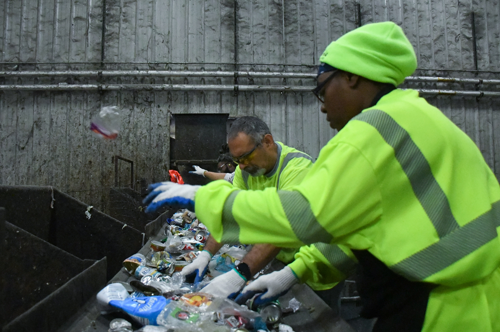
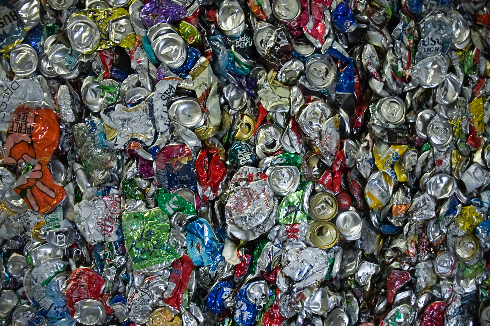
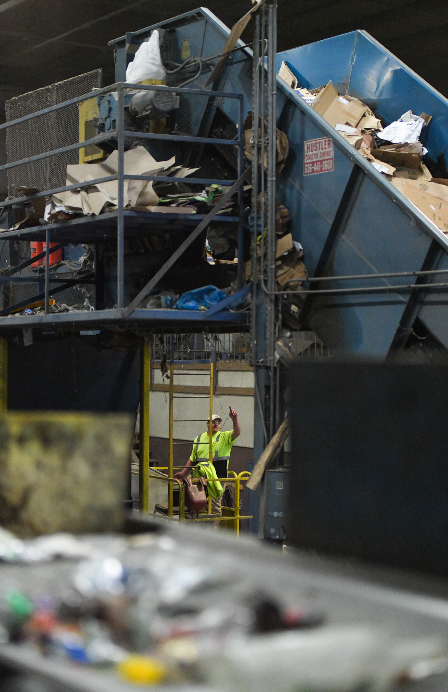
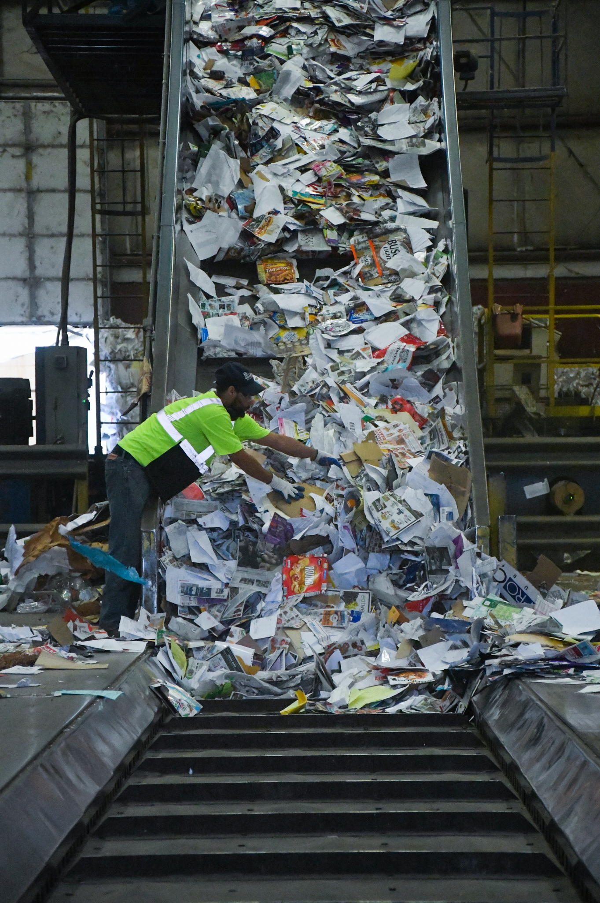
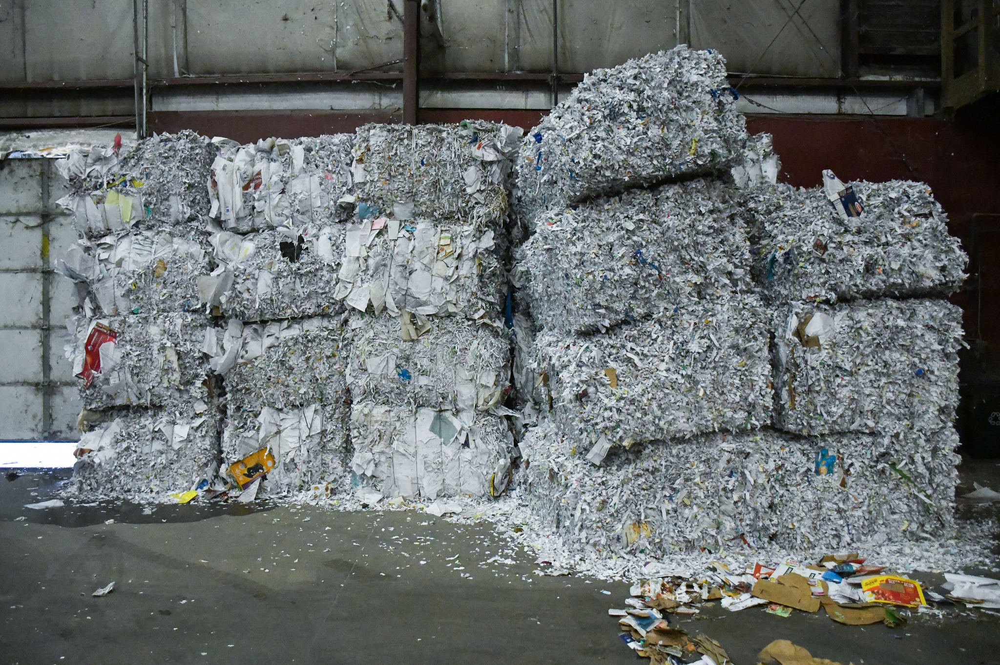
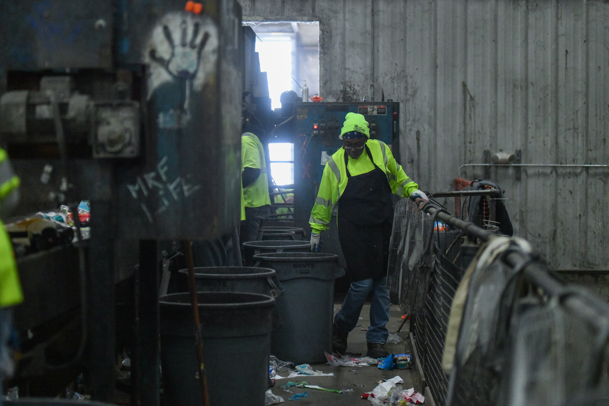
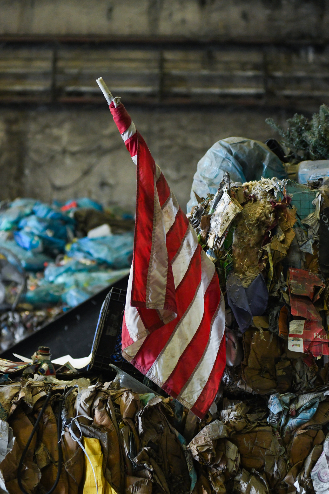

Recycling efforts are increasingly being hampered by contamination that has risen, according to Columbia Recovery Superintendent Nicholas Paul. On a photography assignment for the Columbia Missourian newspaper, I took a trip to Columbia's main recycling facility, just a 15-minute-long drive from my downtown apartment, to illustrate the issue. Here is what I saw.

Recycling facility workers stand in an assembly line and sort materials into bins for 10 hours a day, four days a week.

Compacted aluminum cans pile up in one corner of the facility. Aluminum is often non-recyclable due to a non-metal coating meant to preserve food.

Over the loud noise of machinery operating, facility workers like Dan Wisselman, above, must communicate with their coworkers using gestures.

Worker Ryan James guides masses of cardboard and paper waste onto a conveyor belt. Cardboard cannot be recycled if it has been contaminated with food, and 45% of the waste coming into the facility is contaminated.

The facility ships bales of shredded, paper-based materials to other recycling facilities around the world.

If sorters like Tamia Robinson, pictured above, find unwanted trash from an identifiable source, it gets reported and the people responsible get fined..

The Columbia recycling facility gets stuck sorting out everything from American flags to medical needles to baby dolls.